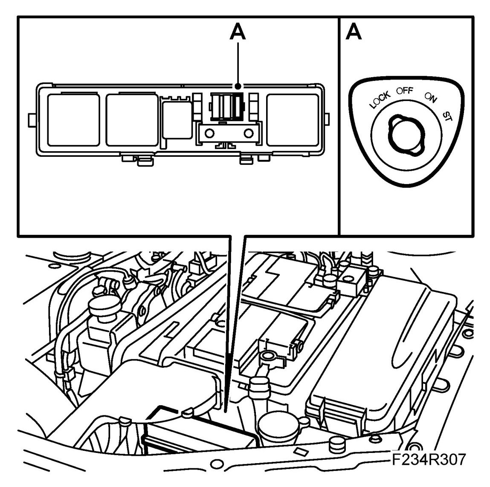
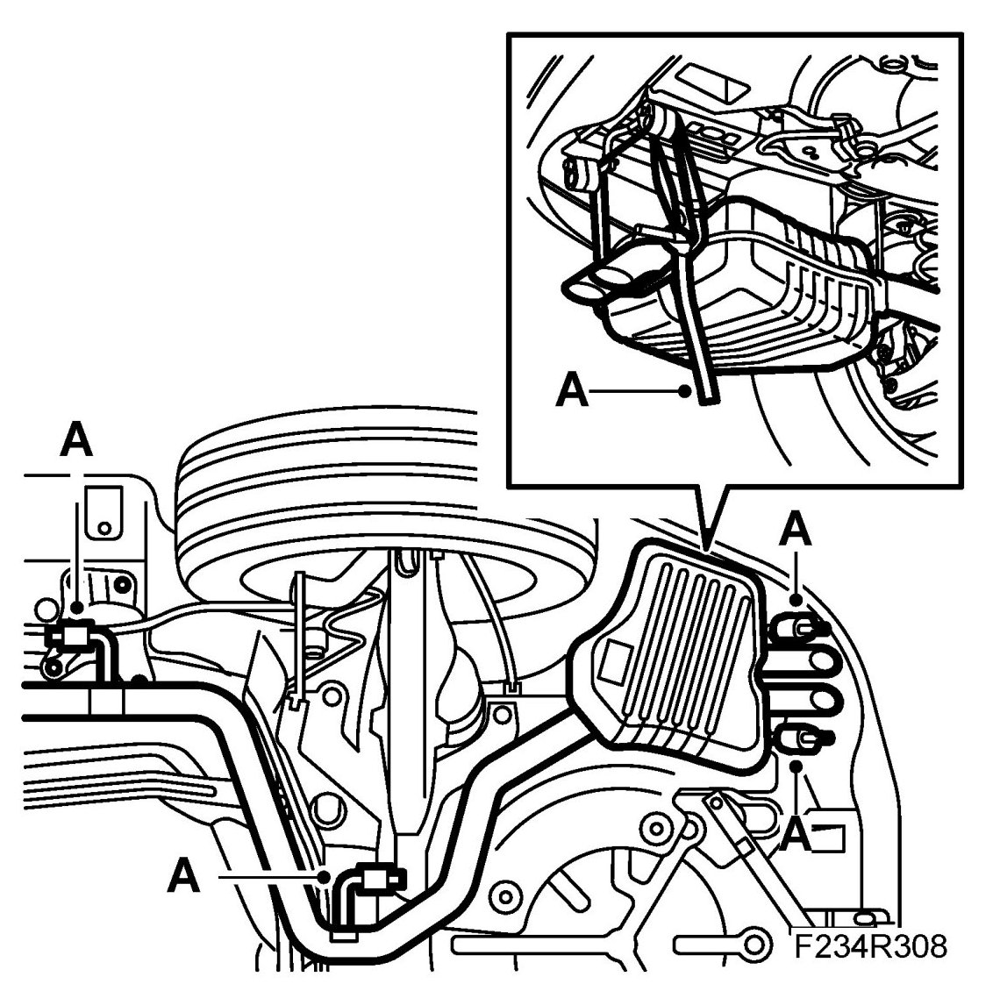
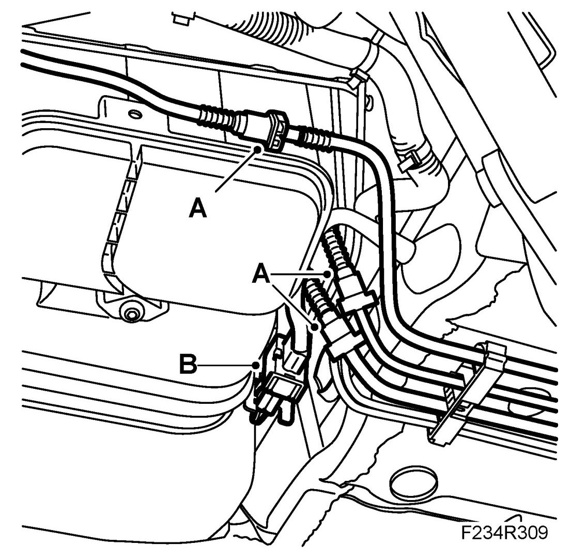
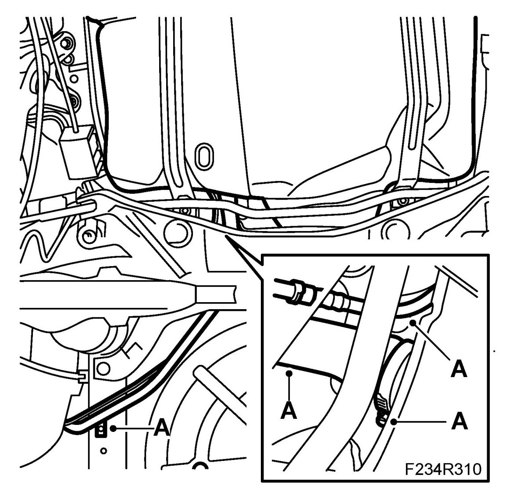
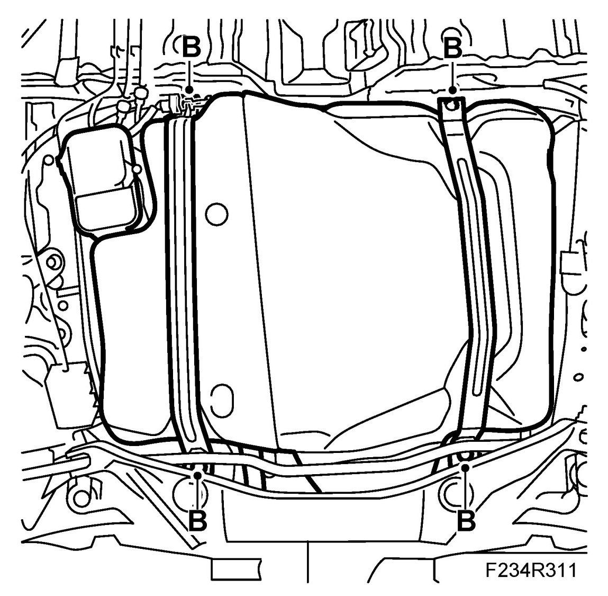
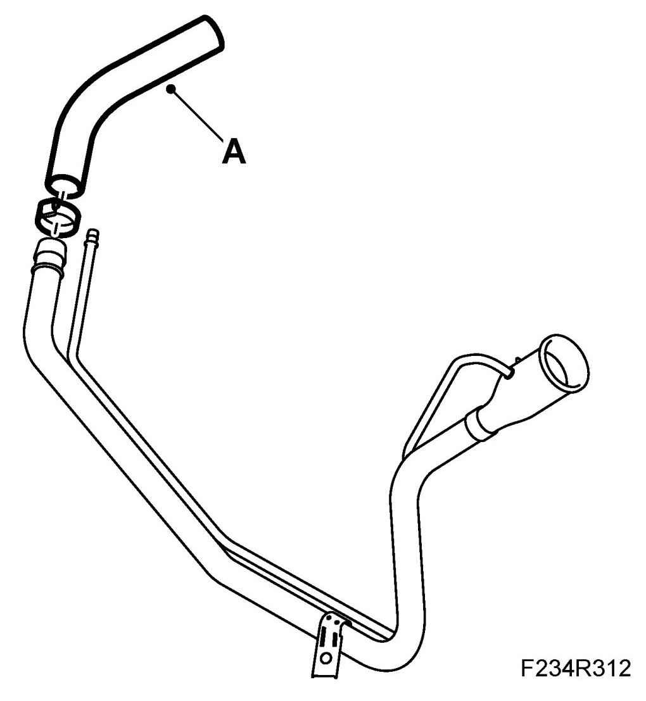
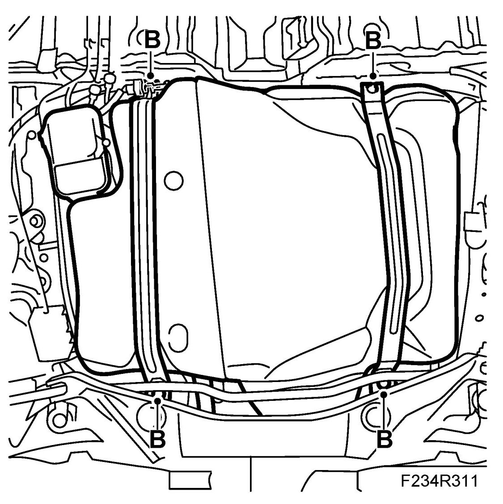
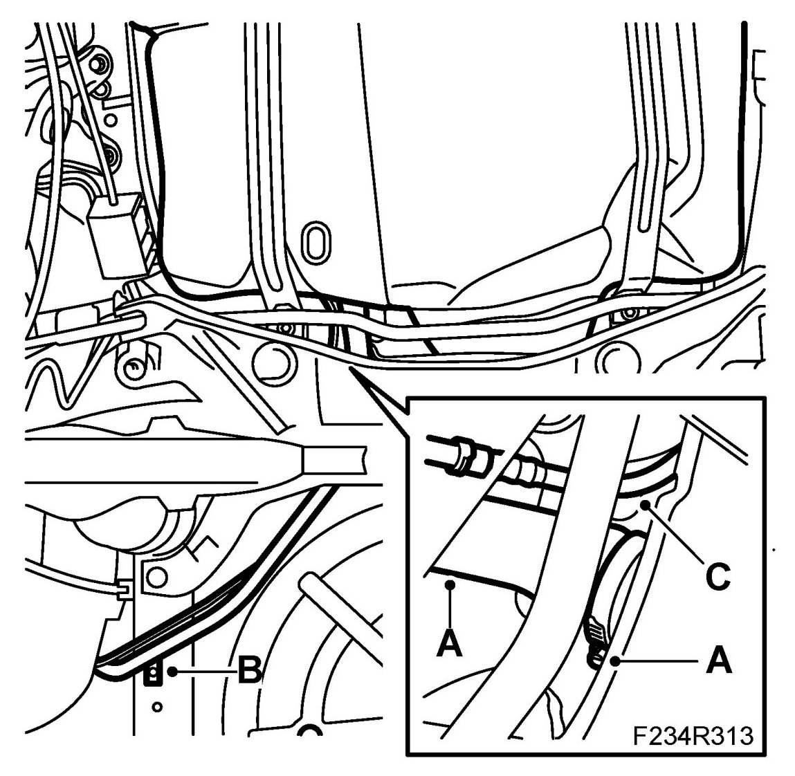
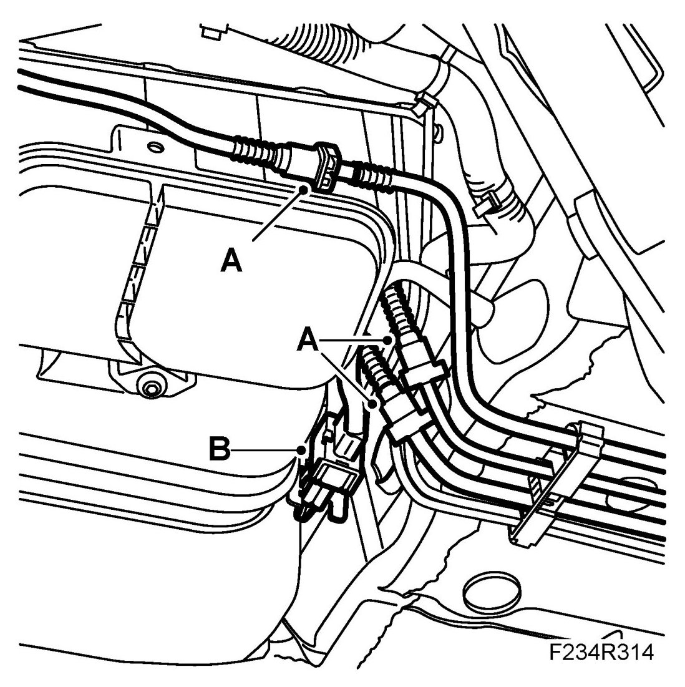
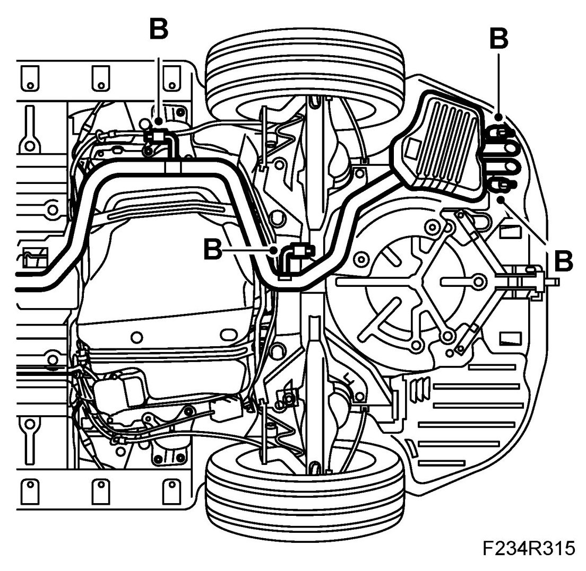

Fuel Tank, E85
Fuel Tank, E85
WARNING:
Removal of the fuel tank involves partial dismantling of the car's fuel system. The following points must therefore be observed in connection with this work.
- Have a class BE fire extinguisher on hand. Be aware of the risk of sparks, i.e. in connection with electric circuits, short-circuiting, etc.
- Absolutely No Smoking.
- Ensure good ventilation. If there is approved ventilation for evacuating fuel fumes then this must be used.
- Wear protective gloves. Prolonged exposure of the hands to fuel can cause irritation to the skin.
- Wear protective goggles.
IMPORTANT: Be particularly observant regarding cleanliness when working on the fuel system. Loss of function may occur due to very small particles. Prevent dirt and grime from entering the fuel system by cleaning the connections and plugging pipes and lines during disassembly. Use 82 92 948 Plugs, A/C system assembly. Keep components free from contaminants during storage.
To remove
1. Reduce the fuel pressure by removing fuse 2 when the engine is running (fuse 2 is in the electrical centre in front of the battery). When the engine has stopped, turn the ignition key to LOCK and refit the fuse (A).

2. Drain the fuel tank. Remove the tank cap.
3. Place the car on a lift.
4. Raise the car.
5. CV : Remove Chassis reinforcement, rear subframe, CV, on right-hand side.
6. Remove the rubber mountings and carefully lower the exhaust system, support with 83 95 212 Strap (A).

7. Disconnect the fuel and purge connections on the EVAP emission canister. Collect any fuel spill (A).

8. Seal the connections to the outlet line from the fuel pump.
9. Unplug and detach the connector on the EVAP emission canister (B).
10. Remove the fuel filler pipe bolt and detach the hose between filler pipe and tank, and disengage the quick coupling (A) for the bleeder. Plug the tank's filler port.

11. Place a column jack under the tank, remove the tank straps and fuel tank (B). Be careful when removing the tank - ensure that no components or connections are damaged.

To fit
1. Replace the connecting hose between the tank and the filler pipe (A).

2. Raise the tank and fit the tank straps (B).
Tightening torque 25 Nm (18 lbf ft)

3. Remove the plug and connect the hose from the fuel filler pipe and tighten the hose clip (A).
Tightening torque 4 Nm (3 lbf ft)

4. Tighten the screw on the fuel filler pipe (B).
Tightening torque 25 Nm (18 lbf ft)
5. Connect the ventilation hose (C).
6. Plug in the connector on the EVAP emission canister (B).
7. Connect the purging and fuel lines (A).

8. Fit the rubber mountings and fit the exhaust system.
Fit Chassis reinforcement, rear subframe, CV, on the right-hand side (B).

9. Lower the car.
10. Fill with fuel and fit the fuel filler flap.
11. Connect and exhaust extractor and start the engine for function test.